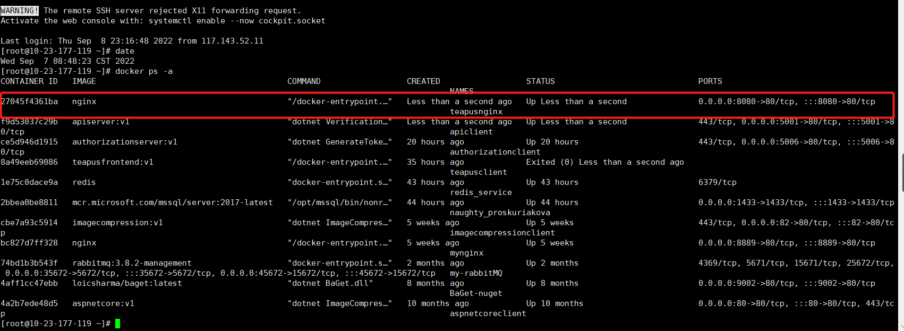
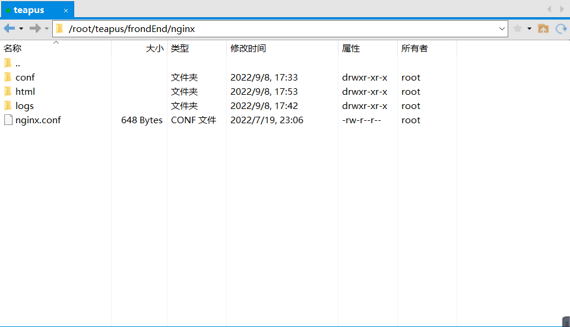
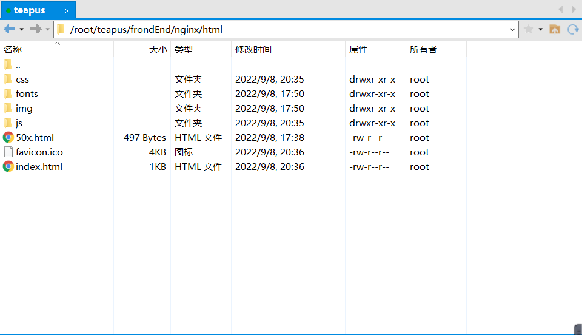
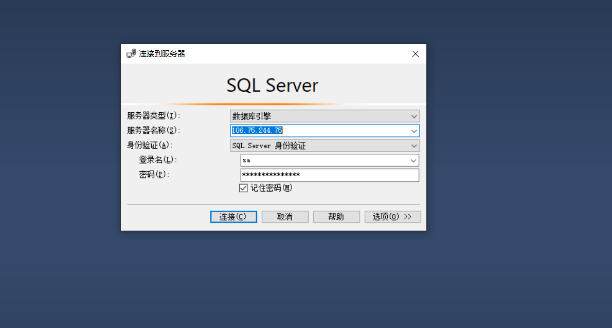

记录将aspnetcore+sqlserver+redis+vue通过docker部署到linux服务器
# 环境
- 后端:.Net5+Sqlserver
- 前端: Vue2
- 服务器：Centos8.3
# 发布 vue
| docker run --name teapusnginx -itd -p 8080:80 nginx |

创建的容器正常运行了
- 拷贝 nginx 的配置文件到主机 (当前 linux 服务器), 为文件映射做准备 (这样做的好处后面介绍)
| docker cp 容器名 / 容器 Id：要拷贝的文件在容器里面的路径 要拷贝到宿主机的相应路径 |
| docker cp teapusnginx:/etc/nginx/nginx.conf /root/teapus/frondEnd/nginx/ |
| docker cp teapusnginx:/etc/nginx/conf.d /root/teapus/frondEnd/nginx/conf/ |
| docker cp teapusnginx:/usr/share/nginx/html /root/teapus/frondEnd/nginx/html |
| docker cp teapusnginx:/var/log/nginx/ /root/teapus/frondEnd/nginx/logs/ |
上面的命令就是将刚刚创建的名称是teapusnginx容器的配置文件复制到主机上

- 停止删除容器 (刚刚创建的 teapusnginx)
| docker stop teapusnginx |
| docker rm teapusnginx |
| docker run -d --name teapusnginx -p 8080:80 -v /root/teapus/frondEnd/nginx/nginx.conf:/etc/nginx/nginx.conf -v /root/teapus/frondEnd/nginx/logs:/var/log/nginx -v /root/teapus/frondEnd/nginx/html:/usr/share/nginx/html -v /root/teapus/frondEnd/nginx/conf/conf.d:/etc/nginx/conf.d --privileged=true -e TZ=Asia/Shanghai nginx |
- 打包 vue (根据自己的项目设置环境变量此处应该是正式环境)
- 复制打包后的 dist 文件夹内容放到主机的 html 目录

注意:这样以后每次发布只需要将打包的dist文件夹中的内容放到主机的html文件夹中就可以。不需要重新构建镜像和运行容器。方便快捷了很多
# 发布后端
# 构建 aspnetcore 发布包
| <?xml version="1.0" encoding="utf-8"?> |
| <configuration> |
| <solution> |
| <add key="disableSourceControlIntegration" value="true" /> |
| </solution> |
| <packageRestore> |
| <add key="enabled" value="True" /> |
| <add key="automatic" value="True" /> |
| </packageRestore> |
| <bindingRedirects> |
| <add key="skip" value="False" /> |
| </bindingRedirects> |
| <packageSources> |
| <add key="nuget.org" value="https://api.nuget.org/v3/index.json" protocolVersion="3" /> |
| <add key="teapus" value="http://106.75.244.75:9002/v3/index.json" /> |
| </packageSources> |
| </configuration> |
# 构建 sqlserver 容器
| docker pull mcr.microsoft.com/mssql/server:2017-latest |
| docker run -e 'ACCEPT_EULA=Y' -e 'SA_PASSWORD = 你的 8 位密码（含大小写字母和数字）' -p 1433:1433 -d mcr.microsoft.com/mssql/server:2017-latest |
注意:密码少于8位生成的容器运行几秒后就会停止，故请设置大小写字母和数字混合的8位密码。
现在你可以通过 linux 的主机 ip+sa (管理员账号)+ 设置的密码 (SA_PASSWORD = 你的 8 位密码（含大小写字母和数字）) 访问数据库

# 构建 redis 通信
| # 创建网络 |
| docker network create -d bridge redis-net |
| # 自动下载 redis 镜像并运行 |
| docker run -itd --name redis_service --network redis-net redis |
# 发布 aspnetcore
| cd /root/teapus/rearEnd/AuthorizationServer |
| docker build -t authorizationserver:v1 . |
- 运行容器
docker run -itd --name authorizationclient --network redis-net -p 5006:80 authorizationserver:v1
# 演示效果